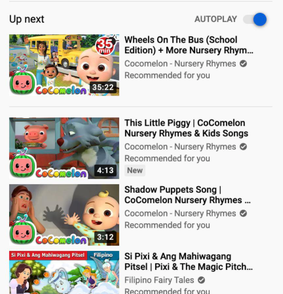

Instagram, YouTube & TikTok:
Instagram is a media-based app that makes use of deep/machine learning and AI. A way in which machine learning is used is through taking the probability of liking a post into account as well as the probability of someone viewing someone's account/posts more than an average amount. More importantly, Instagram makes use of a thing called "word embedding:" word embedding is the concept that represents how accurate the words are to a certain topic or interest a user follows attentively, as well as how related they are to one another (i.e. words like "Jordans" and "socks" would be tied closer together, but "computer" and "dogs" will not). Seed accounts are used in order to get in touch with users, which checks accounts and posts users have liked/followed in the past. It then looks at a series of content from 500 different accounts: this is done so that any unsafe content can be moderated and not displayed to other users. It is from this compilation that 25 videos are displayed to users' Explore pages. The "Home" feed of Instagram works in a very similar way as well. The home screen uses "candidate generation" which fetches the accounts suited to each user’s viewing activities and "candidate selection", which finds the candidates suitable for the content to be displayed. An example of this is if a user likes and comments a series of posts relating to a particular niche. If a user is following a certain musical artist or brand, posts relating to a similar artist or brand will show up in the user's feed. This is found through a "user engagement graph", which gets a user started with popular media items and bases this on the user's activity. The "Shopping" feed of Instagram will market products in a similar way, as well as video reels.
YouTube is a prime example of an app that makes effective use of machine/deep learning and artificial intelligence: with a solid number of 2 billion users and 300 hours of videos uploaded each day, deep learning has helped to control these quantities. YouTube now has the ability to remove any content that they think will appear unsafe, harmful and damaging to viewers. Only 8% of harmful content before YouTube's effective use of machine learning was taken down as opposed to 70% being identified by artificial intelligence. Another example of effective AI and deep learning usage is through the "Up Next" feature. The app has now acquired the ability to assess a user's YouTube history, and add a rank system that assesses the video's relevance. This process is called "ArgoTransparency," which will determine recommendations based on a users' watch times. This, in effect, allows more unknown videos/content to get exposure.
Another social media app that makes use of a similar algorithm is TikTok (also commonly known in China as Douyin). TikTok has a "For You" page which bases the videos recommended to a user based on past followings and likes, similarly to Instagram. However, it also analyses the language setting on a user's device as well as its chosen OS (iOS, Android, Windows, etc.), and the country the user may be in at the time of the given recommendation. In order for a video to go viral, it is not based on a content creator's following, but rather on how many likes a user would receive on past videos, thus making it easier for those with higher amounts of likes and comments to succeed.
YouTube 'Up Next' Example:
Instagram Ad Example:
Made 6th June 2021